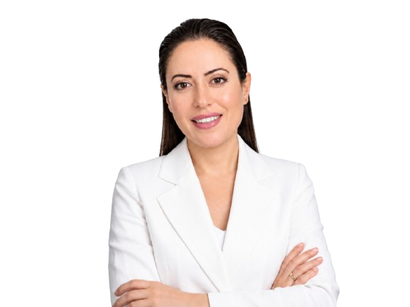
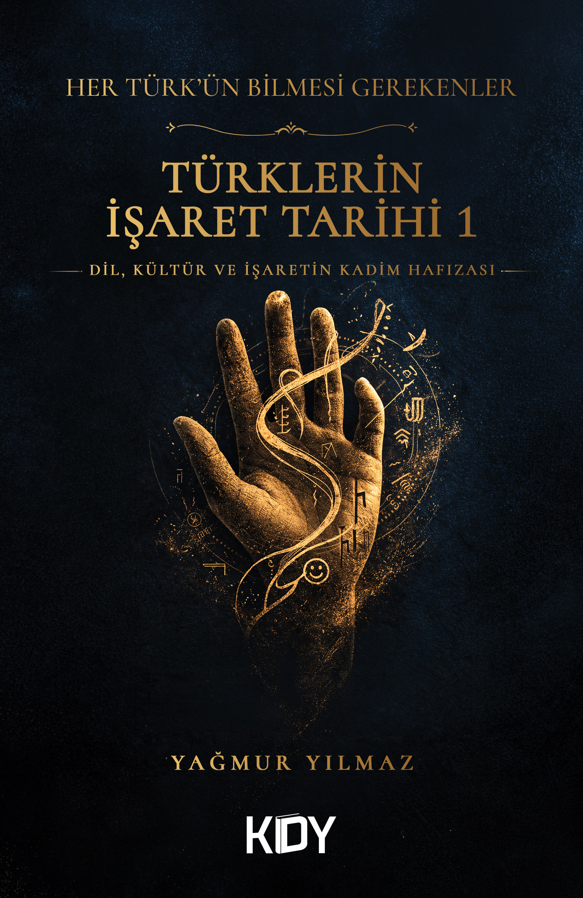
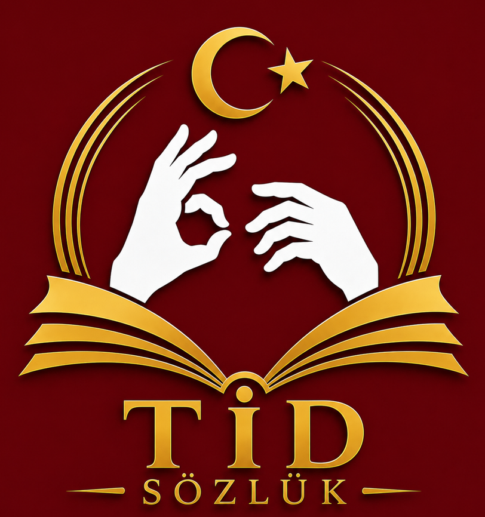
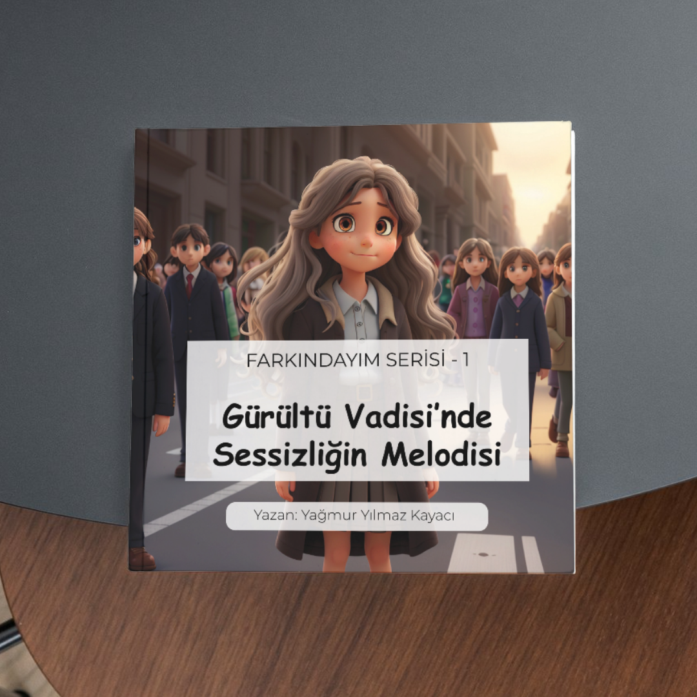
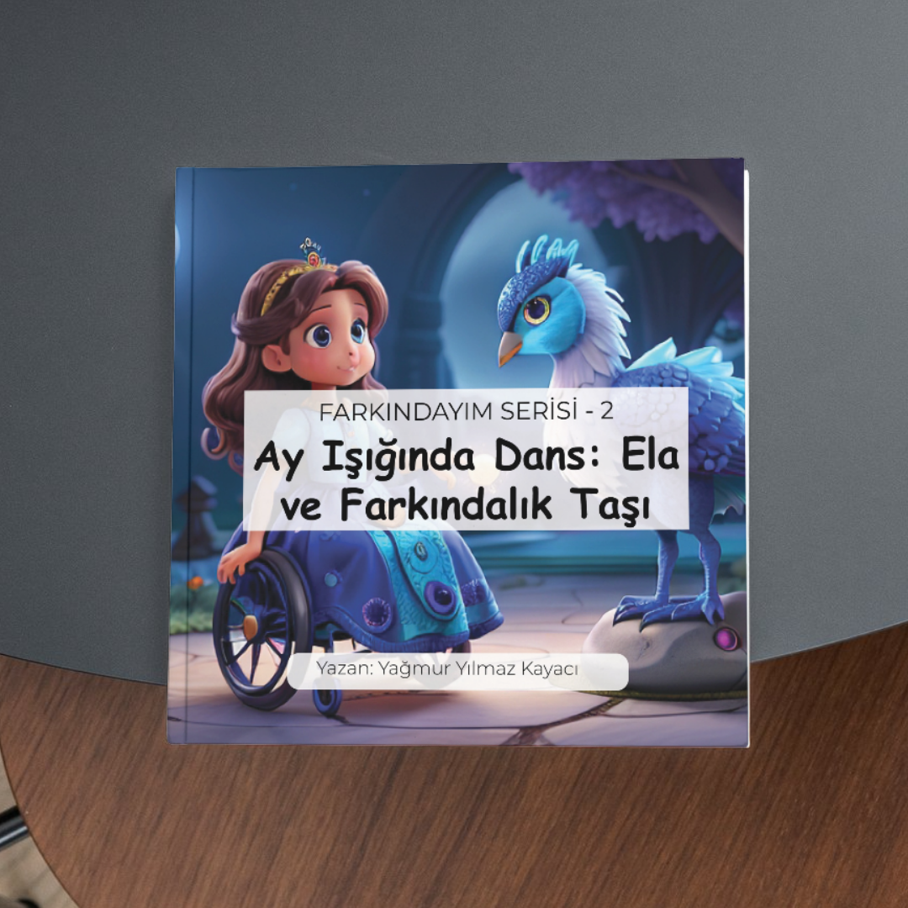
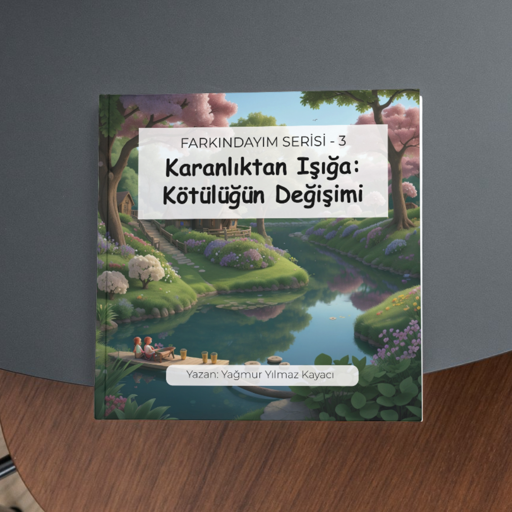
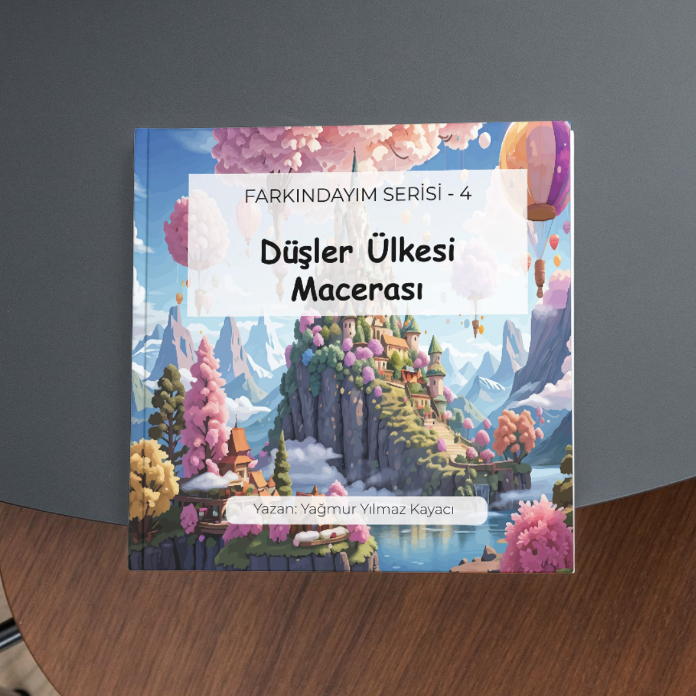
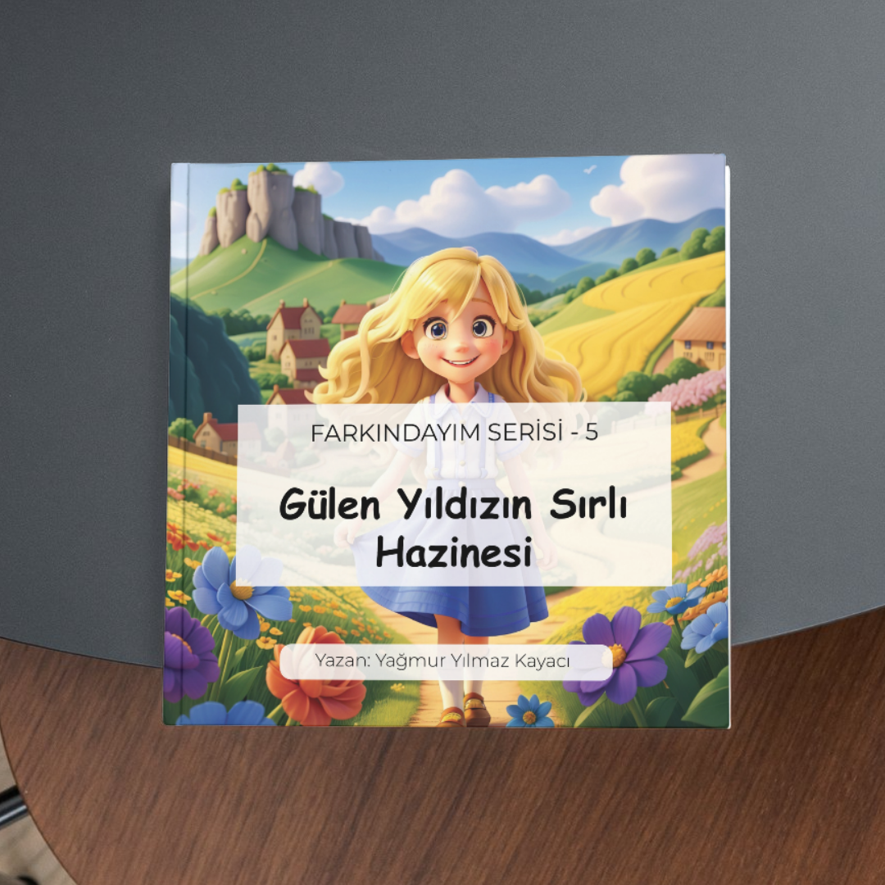
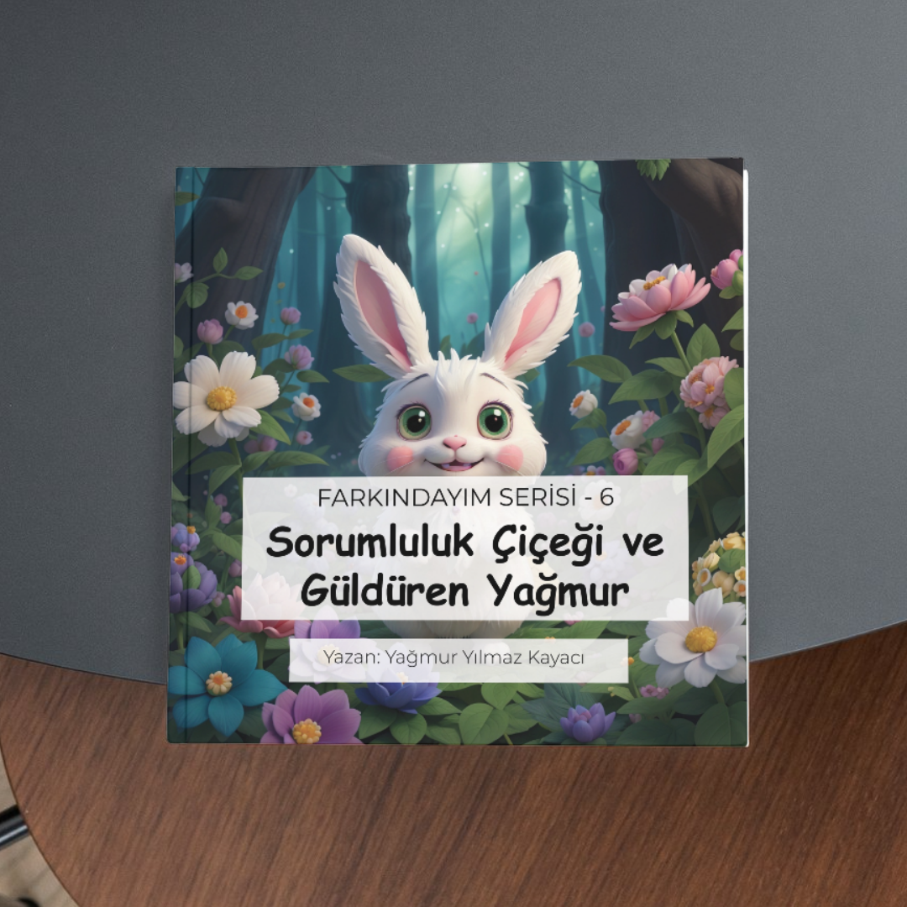

Merhaba, ben Yağmur Yılmaz Kayacı. Bilginin ve toplumsal bilincin paylaşıldıkça çoğaldığına inanan; Türk kültürü, tarihi ve dili üzerine araştırmalar yapan bağımsız bir araştırmacı, yazar ve eğitmenim.
RTV Programcılığı, Kamu Yönetimi lisans eğitimi ile İş Sağlığı ve Güvenliği alanındaki mezuniyetlerimi, yıllardır Türk İşaret Dili (TİD) dalında yürüttüğüm akademik ve pratik çalışmalarla birleştiriyorum. Aynı zamanda eğitimli bir afet gönüllüsü olarak toplumsal sorumluluk projelerinde aktif rol alıyor; dezavantajlı grupların hayatında farkındalık yaratmayı ve iletişimin engellerini aşmayı amaçlıyorum.
Geliştirdiğim dijital projeler, kaleme aldığım eserler ve yürüttüğüm eğitimlerle kültürel mirasımızı ve toplumsal dayanışmayı geleceğe taşımaya devam ediyorum.

Dil, konuşulmadan önce vardı. Bu kitap, o sessiz çağın izini sürüyor. Dil gerçekten sesle mi başladı, yoksa insanlık kelimelerden önce işaretlerle mi anlaştı? İlk dil işaret dili miydi?
Türk İşaret Dili’ni merkezine alan bu çalışma, dili yalnızca bir iletişim aracı olarak değil; nesiller boyunca aktarılan bir hafıza, bir kimlik ve bir kültür alanı olarak ele alıyor. Okuyucusunu, dil üzerine yeniden düşünmeye; kendi diline ve kültürüne sahip çıkmaya davet ediyor.
'Her Türk’ün Bilmesi Gerekenler' başlıklı çok ciltli serinin ilk kitabı olan Türklerin İşaret Tarihi, Türk tamgalarından günümüz işaret kültürüne uzanan kadim iletişim mirasını, Türk kültür tarihi ekseninde ele alıyor ve bu alanda farklı bir bakış açısı sunuyor.
Kitapyurdu'nda İncele / Satın AlMEB onaylı TİD Tercümanı ve Eğitmeni kimliğimle profesyonel eğitim serileri veriyorum.
Temel seviyenin 120 saate, ileri seviyenin 200 saate denk geldiği; ayrıntılı ve profesyonel bir şekilde çekilmiş Türk İşaret Dili eğitimlerim bu alanda yetkinlik kazanmak isteyenler için Udemy platformunda yayındadır.

TİD Sözlük: Ücretsiz yayınladığım bu mobil sözlük uygulaması ile kullanıcılar işaret dili kelimelerine doğrudan erişebilir ve hemen kelime öğrenebilirler.
Cep Kasa: Altın & Varlık Takip: Güvenli bir varlık ve altın listesi saklama aracıdır.
Engellilik ve sosyal farkındalık temalı, akran zorbalığını da işleyen, 'Farkındayım Serisi' isminde Google Play Store üzerinden edinilebilen 6 adet çocuk masal kitabım bulunmaktadır.





